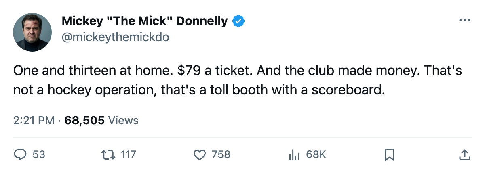
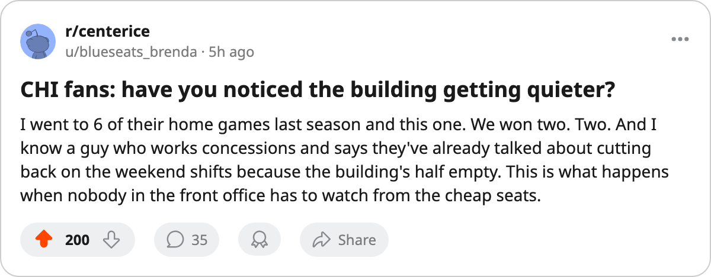

HOT SEAT METER: FIVE COACHES POLISHING THE RÉSUMÉ
Chicago has won one home game all year. That's not a slump. That's a firing offense.
 Mickey "The Mick" DonnellyColumnist, ex-goalie · The Penalty Box
Mickey "The Mick" DonnellyColumnist, ex-goalie · The Penalty BoxChicago Blackhawks head coach: 1-13 at home, L4, worst home record in hockey

One and thirteen. That's  Chicago Blackhawks at home. One win in 14 games on their own ice. The next-worst club,
Chicago Blackhawks at home. One win in 14 games on their own ice. The next-worst club,  San Jose Sharks, has managed three wins at home. Chicago has one. 15,254 people paid $79 a head to watch that, and the club posted $24.88M in profit anyway. Somebody's having a good year. It isn't the fan in the upper deck.
San Jose Sharks, has managed three wins at home. Chicago has one. 15,254 people paid $79 a head to watch that, and the club posted $24.88M in profit anyway. Somebody's having a good year. It isn't the fan in the upper deck.
Chicago Blackhawks payroll is $48.74M for 20 points. That's $2.44M per point, 5th-worst in a 30-team league. They're on a 4-game slide. The Development Index has  Jay Pandolfo66 at -4, a 30-year-old left wing with 2 points in 27 games. The Bureau's mis-slot chart has
Jay Pandolfo66 at -4, a 30-year-old left wing with 2 points in 27 games. The Bureau's mis-slot chart has  Alexander Karpovtsev70, rated 70, riding the fourth defensive pair above Burke Henry66, rated 66. You don't need a spreadsheet to tell you a coach who buries a 70 below a 66 has lost his room.
Alexander Karpovtsev70, rated 70, riding the fourth defensive pair above Burke Henry66, rated 66. You don't need a spreadsheet to tell you a coach who buries a 70 below a 66 has lost his room.
| Rank | Club | The record that indicts | Per point | Streak |
|---|---|---|---|---|
| 1 | CHI | 1-13 at home | $2.44M | L4 |
| 2 | WSH | 4-8 at home, 5-11 away | $2.59M | L3 |
| 3 | LA | 2-13 on the road | $2.54M | L1 |
| 4 | MIN | 5-10 at home | $1.86M | L1 |
| 5 | FLA | 5-10 on the road | $2.12M | L1 |
Washington pays the most per point in hockey. $2.59M.
 Washington Capitals has the worst cost-per-point figure in the league. Seven wins, fifteen losses, four overtime losses. Four and eight at their own building. Five and eleven on the road. Three straight defeats.
Washington Capitals has the worst cost-per-point figure in the league. Seven wins, fifteen losses, four overtime losses. Four and eight at their own building. Five and eleven on the road. Three straight defeats.  Olaf Kolzig88 carries a morale of 76 on $6.20M a year, the fourth-lowest on the Bureau's entire list of 15 unhappy men. He's 22 games in, 66 minutes a night, and he looks it.
Olaf Kolzig88 carries a morale of 76 on $6.20M a year, the fourth-lowest on the Bureau's entire list of 15 unhappy men. He's 22 games in, 66 minutes a night, and he looks it.
Los Angeles wins two road games in 15 attempts.
Two. That's  Los Angeles Kings on the highway. They score 56 goals in 26 games and give up 72. Their payroll is $50.80M. Their point cost is $2.54M, 3rd-worst in hockey. They sit in 29th place in the standings with 20 points, dead last in the Pacific Division.
Los Angeles Kings on the highway. They score 56 goals in 26 games and give up 72. Their payroll is $50.80M. Their point cost is $2.54M, 3rd-worst in hockey. They sit in 29th place in the standings with 20 points, dead last in the Pacific Division.
Minnesota can't win in front of its own people.
Five wins. Ten losses. At home.  Minnesota Wild scores 75 and surrenders 75. A team that can't find a way to win or lose cleanly is a team whose coach has no system. The fans pay $82 a ticket to watch it.
Minnesota Wild scores 75 and surrenders 75. A team that can't find a way to win or lose cleanly is a team whose coach has no system. The fans pay $82 a ticket to watch it.
Florida has no answer on the road.
Five wins in 15 away games. Eight and thirteen and three overall.  Florida Panthers pays $57.33M for 27 points.
Florida Panthers pays $57.33M for 27 points.  Vaclav Nedorost80 is up 12 on the Development Index, and that's the entire bright spot. Nobody else is bailing anyone out.
Vaclav Nedorost80 is up 12 on the Development Index, and that's the entire bright spot. Nobody else is bailing anyone out.
These men are coaching for their jobs and the fans are still buying tickets
Five clubs. Five coaches losing more than they win. Five sets of people paying between $79 and $82 a ticket to sit through it. Chicago Blackhawks is going to have to drop that price or find a new coach. The other four aren't far behind. The players in those locker rooms are either going to start winning at home or start wearing someone else's sweater, and neither option is kind to the man behind the bench.

